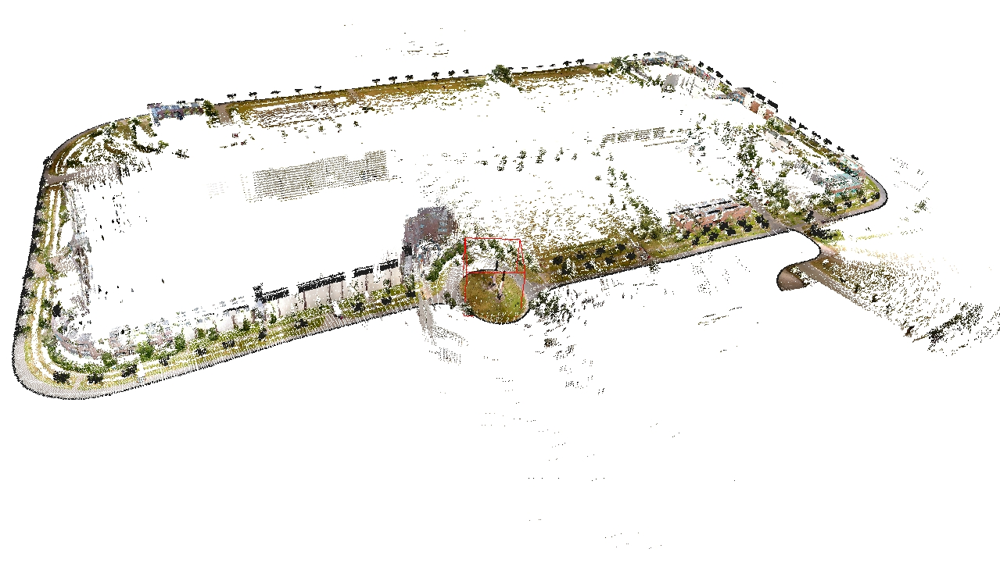

3D Mapping
Last update: april 18th 2012
Project description and Demonstrator
In 2008, we had a cooperation with an industrial partner to perform 3D Mapping using a laser scanner. We had a dataset of 6 Millions of laser data collected with a vehicle moving in an urban environment. The localization of the vehicle was provided. A camera was also mounted on the vehicle and laser data were synchronized with images. So, each laser data had 6 dimensions: x, y and z (for position) and RGB component for color.
The problem was to propose a model of this 6D dataset with high precision and significant reduction of size. We build a multiscale gaussian map of 700 meters x 200 meters x 50 meters. This map was composed of 3 scales: cells have a size of 20 centimeters, 3.2 meters and 12.8 meters.
Experimental Results

FIGURE 1: 3D representation of 3D laser data and color.

FIGURE 2: focus of the 3D representation of the roundabout.
With this data set, we have experimented the use of the color as an extra clustering dimension. In this case, the points are gathered into a same cluster if they are close in terms of location (ie, they produce the smallest possible ellipsoid in the 3D space) and in terms of color (they make the smallest ellipsoid in the RGB color space). With that clustering, we were able to obtained a reduce representation of less than 0.1\% of the original data but nonetheless accurate (see figure 1). Moreover, one can see in figure 2 that a significant distinction is made between the object in the environment based upon the color. In particular vegetation is well separated from artificial structure.